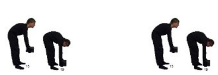

گام سوم: تعیین امتیاز پوسچر بدن
حرکت میتواند در هر دو جهت انجام شود، به این معنا که نمادهای تصویری نشان دادهشده میتوانند هم بهعنوان نقطه آغاز و هم بهعنوان نقطه پایان جابجایی بار در نظر گرفته شوند. اگر چندین نماد تصویری در یک بخش قرار داشته باشند، این نمادها از نظر اهمیت برابر در نظر گرفته میشوند. علاوه بر این، چرخش/انحراف جانبی تنه، موقعیت بار/چنگش بار در فاصله از بدن، کار با دستهای بالاتر از ارتفاع سر و چنگش بار در سطح شانه باید (به عنوان امتیازهای اضافی) در نظر گرفته شود.
| آغاز/پایان | امتیاز | آغاز/پایان | امتیاز |
|---|---|---|---|
 |
0 | 10 | |
| 3 | 13 | ||
| 5 |  | 15 | |
| 7 | 18 | ||
| 9 | 20 |
| امتیازهای اضافی (حداکثر 6 امتیاز) فقط در صورت مرتبط بودن: | امتیاز |
|---|---|
| 1+ پیچش و/یا انحراف جانبی تنه گهگاهی قابل تشخیص | 1 |
| 3+ پیچش و/یا انحراف جانبی تنه به طور مکرر/مداوم قابل تشخیص | 3 |
| 1+ مرکز بار و/یا دستها گهگاهی از بدن فاصله دارند | 1 |
| 3+ مرکز بار و/یا دستها به صور مکرر/ثابت از بدن فاصله دارد | 3 |
| 0.5+ بازوها گهگاهی بالا میروند، دستها بین ارتفاع آرنج و شانه | 0.5 |
| 1+ بازوها مکرر/ثابت بالا میروند، دستها بین آرنج و سطح شانه | 1 |
| 1+ دستها گهگاهی از ارتفاع شانه بالاتر میروند | 1 |
| 2+ دستها مکررا از ارتفاع شانه بالاتر میروند | 2 |
امتیاز پوسچر: —